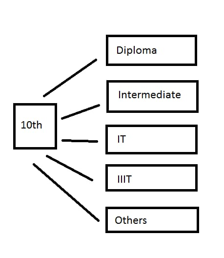
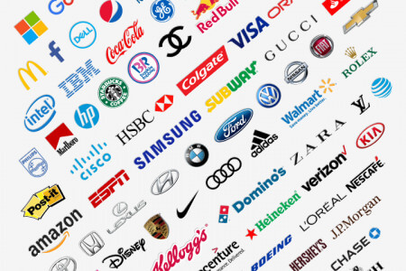

A career plan is a practical strategy that allows you to determine
your skills and interests, set career goals, and put actions in place
that will help you reach them. It's a continuous process, and it
includes an overview of: Your current skills and experience. Your
career goals. Your interests.
If you are studing 10th then after :
you have various plans to your career

First you have to know yourself because
if you have any interest on particular category like medicine , science and arts etc.
Then It is easy build your career by planning.if you don't have interest there is nothing to do.
If you are studing/completed Diploma:
If you are selected Diploma that means you are interested in science field.
After Diploma you can continue higher education through "ECET-Entrance Exam".
There are lot of oppourtunities in government sector.
We can also apply GATE Exam. Which helps to get government jobb easy.
Polytechnic courses offer decent career prospects to students in different sectors.
Most companies in the field of Electronics, Automobile, Civil Engineering etc prefer
Diploma holders in respective specializations.
Turn Your
Imagination
Into
Reality
After Intermediate oppourtunities:
What to do after 12th?
If you are a Class 12 student, along with preparing for the Board Exams,
you will also have to deal with one interesting but really nagging question,
i.e., ‘What to do after Class 12?’ While many Class 12 students might have
already decided what they want to do after Class 12, there are many other
students who are still confused and undecided about the future they want to build.
What to do After Degree
You can do either Higher Education nor build your own career through job.There are so many oppourtunities
after degree.
you can go for PG through PGECET for MSc etc.
You can write ICET for MBA,MCA etc.
If are intrested to do a job in IT in different companies.There so many companies for more oppourtunities

Career after Btech:
Engineering (B.E., or B.Tech.,) is among the most popular graduation courses
that students take after completing their school. Choosing the right career can
be confusing for many students. The world is full of opportunities. And you
might not be aware of most of them. One has to know the list of all career options
after engineering to select the right one.
Higher Studies
One of the most popular career options after engineering is to pursue further studies.
If you’re a B.Tech student, then you can prepare for the GATE exam.
GATE (Graduate Aptitude Test in Engineering) is an exam that tests the
comprehensive understanding of undergraduate engineering subjects.
With an excellent GATE score, you can enter prestigious engineering
colleges (IITs and NITs) for M.Tech. M.Tech is one of the preferred courses after engineering.
There was a time when engineers shied away from entrepreneurship.
But the successes of many engineer entrepreneurs in recent years have inspired the youth.
You can choose to start your entrepreneurial journey after graduating.
It is one of the most favourite career options after engineering for most of the engineering students.
You can choose to get an engineering job through campus placements. Campus placements can help you get
a high-paying job even before you get your degree.
Campus placements can be very lucrative. The number of job offers worth more than one
crore has increased considerably in the past few years.
ABOUT:
What is career plan?
Develop a personalized career plan step by step and open the door to your next opportunity.
Build digital skills you need to thrive at work and get certified for a stronger resume.
How to make a career plan?
we follow some steps as given below:
STEP 1:Explore career options. STEP 2:Conduct the field research. STEP 3:determine your job target. STEP 4:Build your credentials and Resume. STEP 5:Prepare for your job search. STEP 6:Launch your job search.
Why is career planning important?
A career plan is important as
it can help you manage the direction of your career, the job skills and
knowledge you may need, how get them and how you can secure your dream job. Developing a career plan
can major objectives that seem impossible become much more manageable.
CONTACT:
CONTAT US
Do u want share somthing to me:Mail to Mounika
13-336/A, Bhavani Nagar, Tirupati, Chittoor District,517501